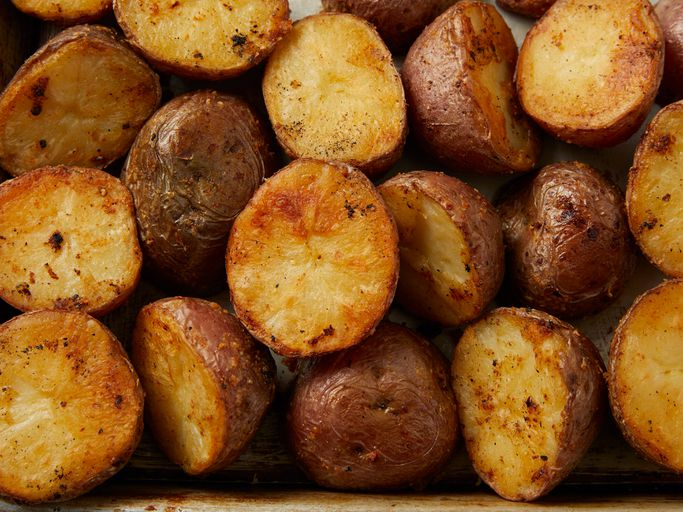

photo by DOTDASH MEREDITH FOOD STUDIOS, from
Allrecipes
Description
These Parmesan-roasted potatoes are crispy on the outside and soft and
creamy on the inside.
Ingredients
cooking spray
1 teaspoon vegetable oil, or as needed
2 tablespoons freshly grated Parmesan cheese
½ teaspoon salt
½ teaspoon garlic powder
½ teaspoon paprika
¼ teaspoon ground black pepper
2 pounds red potatoes, halved
1 tablespoon vegetable oil, or as needed
¼ cup sour cream (Optional)
Steps
Preheat the oven to 400 degrees F (200 degrees C). Spray a 9x13-inch
baking pan or cast iron skillet with cooking spray; pour in about 1
teaspoon vegetable oil to coat the bottom.
Mix Parmesan, salt, garlic powder, paprika, and pepper together in a
bowl.
Blot dry the cut-side of potatoes with a paper towel to remove any
moisture.
Place potatoes in a bowl and drizzle with 1 tablespoon vegetable oil;
toss until potatoes are lightly coated. Sprinkle potatoes with Parmesan
mixture; toss to coat.
Arrange potatoes, cut-side down, on the prepared baking pan.
Bake in the preheated oven for 15 to 20 minutes. Flip potatoes and
continue baking until golden and crispy, 15 to 20 more minutes. Serve
with sour cream.